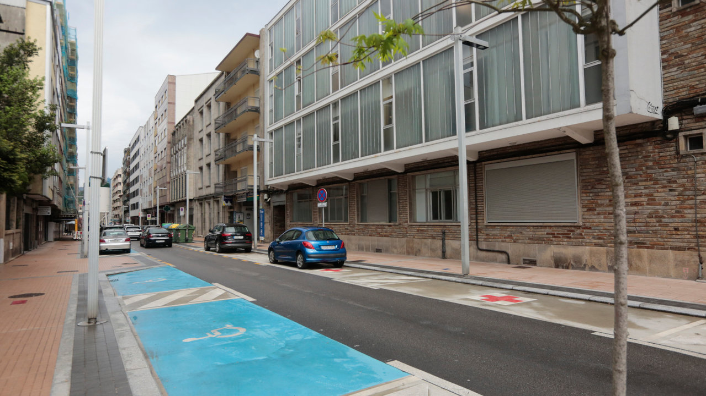
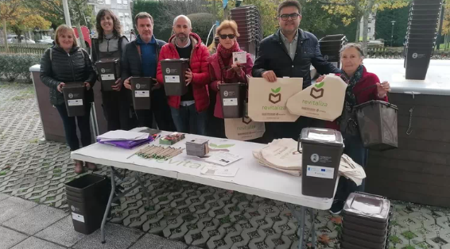

Avante Poio
La sección segunda de la Audiencia Provincial de Pontevedra ha condenado a dos años de prisión y el pago de una multa de 300 euros a un vecino de O Vao, en Poio, acusado de vender droga a pequeña escala en el centro de Pontevedra usando para ello a una niña menor de edad.
Este hombre ha reconocido los hechos tras alcanzar un acuerdo de conformidad con la Fiscalía, que accedió a rebajar la pena inicial de cinco años y nueve meses de cárcel más el pago de 300 euros que solicitaba para él.
Según el escrito de acusación del Ministerio Fiscal, el 23 de marzo de 2021, sobre las 19:20 horas, el acusado se dirigió a la calle Echegaray en un vehículo conducido por otra persona, en el que viajaba también una menor en el asiento posterior.
Al llegar a las inmediaciones del centro de salud Virgen Peregrina, bajó del coche con la niña y, tras contactar por teléfono con uno de sus clientes, entregó a la menor una papelina de 0,331 gramos de cocaína para que se la entregase al comprador, que le pagó con un billete de 10 euros.
Una patrulla de la policía observó la situación e intervino de manera inmediata. La sentencia es firme y contra ella no cabe recurso.
Cada vez es más habitual observar o, incluso, tomarse con animales salvajes en zonas zonas urbanas que antaño apenas pisaban. El caso más reciente de la comarca de Pontevedra se produjo este lunes en el municipio de Poio. Y es que el paseo, sosegado y tranquilo, de tres jabalíes sorprendió a los vecinos de la avenida de Andurique, así como de otros puntos del concello.

Los testigos de este avistamiento relataron que los animales cruzaron la PO-308 obligando a algunos usuarios de la carretera de la costa a detener su marcha, al tiempo que aprovecharon el momento para inmortalizar el insólito encuentro con sus teléfonos móviles. De igual modo, los cerdos silvestres fueron también vistos en otras zonas próximas a Andurique, como es el entorno de A Caeira.
Cruce en un paso de cebra en Areas
También tres jabalíes, al parecer los mismos que fueron observados en otro punto de la PO-308, se dejaron ver en Sanxenxo. Así, se les observó atravesando un paso de cebra, tal cual, en el entorno de la playa de Areas. En este caso, estuvieron acompañados por un perro, igual de sorprendido que los vecinos y usuarios de esta carretera que les siguió unos metros.
Los concejales de Servizos Municipais de Poio, Julio Casás, y de Promoción Económica, Gregorio Agís, participaron este martes en el inicio de la distribución de un millar de cubos para la separación de los restos orgánicos en las viviendas. El reparto se realizó en el entorno del parque Rosalía de Castro, donde se emplaza uno de los Centros Composteiros Comunitarios (CCC) habilitados en el casco urbano de San Salvador el amparo del Plan Revitaliza.
Julio Casás precisó que los recipientes fueron repartidos entre los vecinos que habitualmente hacen uso de los composteros comunitarios. Al mismo tiempo, destacó el hecho de que, «desde a súa instalación, cada vez son utilizados por máis xente, o que fala moi ben do compromiso da cidadanía no que a tratamento deste tipo de residuos se refire».
Al tiempo que se realizó el reparto, se distribuyeron folletos y dípticos de información sobre las ventajas del compostaje, así como se entregaron muestras de compost o bolsas de tela.